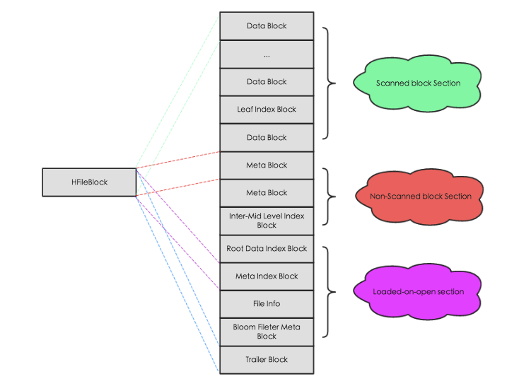

Ch06-HBase 之 StoreFile
November 10, 2020
HFile 是 HBase 存储数据的文件组织形式，参考 BigTable 的 SSTable 和 Hadoop 的 TFile 实现。从 HBase 开始到现在，HFile 经历了三个版本，其中 V2 在 0.92 引入，V3 在 0.98 引入。HFileV1 版本的在实际使用过程中发现它占用内存多，HFile V2 版本针对此进行了优化，HFile V3 版本基本和 V2 版本相同，只是在 cell 层面添加了 Tag 数组的支持。
1. HFile V2 逻辑结构 #
文件主要分为四个部分：Scanned block section，Non-scanned block section，Load-on-open section和Trailer。如下图所示：

其中每个部分的作用如下
| 名称 | 说明 |
|---|---|
| Scanned block section | 表示顺序扫描 HFile 时所有的数据块将会被读取，包括 DataBlock，Leaf Index Block，Bloom Block |
| Non-scanned block section | 表示在 HFile 顺序扫描的时候数据不会被读取，主要包括 Meta Block(用来兼容 v1，v2 后就不再存储数据了) 和 Intermediate Level Data Index Blocks 两部分 |
| Load-on-open section | 该部分数据在 HBase 的 region server 启动时，会被加载到内存中。其中包括 FileInfo、Bloom filter block、Data block index 和 Meta block index。 |
| Trailer | 记录了 HFile 的基本信息、各个部分的偏移值和寻址信息。 |
2. HFile V2 物理结构 #

如上图所示，HFile 会被切分为多个大小相等的 block 块，每个 block 的大小可以在创建表列簇的时候通过参数blocksize ＝> '65535'进行指定，默认为 64k，大号的 Block 有利于顺序 Scan，小号 Block 利于随机查询，因而需要权衡。
可以使用下述命令查看实际的一个 HFile，具体内容可以参考附件。
hbase org.apache.hadoop.hbase.io.hfile.HFile -v -p -m -f /hbase/data/default/tmp/bf9e4d84d5b5c58123d2436c0745ac02/cf/d6da722c69a74d75852f87f6c009dacd
3. HFileBlock 介绍 #
HFileBlock 主要分为 3 部分：Block Header，Block Data 和 Block Tail。其中，Block Header 用来存储元数据，包括block 类型，压缩 block 大小，上一个 block 的偏移量等；而 Block Data 主要存储具体的数据；Block Tail 则主要用来存储校验码。

HFile 中的 BlockType 总共有如下几种，后面会对几种比较重要的 Block 详细说明。

(图中 META 和 METABLKc 标反了)
3.1 DATA #
DataBlock 是 HBase 中数据存储的最小单元。DataBlock 中主要存储用户的 KeyValue 数据（KeyValue 后面一般会跟一个 timestamp，图中未标出），而 KeyValue 结构是 HBase 存储的核心，每个数据都是以 KeyValue 结构在 HBase 中进行存储。KeyValue 结构在内存和磁盘中可以表示为下图
每个 KeyValue 都由 4 个部分构成，分别为 key length，value length，key 和 value。其中 key value 和 value length 是两个固定长度的数值，而 key 是一个复杂的结构，首先是 rowkey 的长度，接着是 rowkey，然后是 ColumnFamily 的长度，再是 ColumnFamily，之后是 ColumnQualifier，最后是时间戳和 KeyType（keytype 有四种类型，分别是 Put、Delete、DeleteColumn 和 DeleteFamily），value 就没有那么复杂，就是一串纯粹的二进制数据。
3.2 ROOT_INDEX | INTERMEDIATE_INDEX | LEAF_INDEX #
HFile 中的index level是不固定的，根据不同的数据类型和数据大小有不同的选择，主要有两类，一类是 single-level（单级索引），另一类是 multi-level（多级索引，索引 block 无法在内存中存放，所以采用多级索引）。
HFile 中的index chunk有两大类，分别是 root index chunk、nonRoot index chunk。而 nonRoot index chunk 又分为 interMetadiate index chunk 和 leaf index chunk，但 intermetadiate index chunk 和 leaf index chunk 在内存中的分布是一样的。
- 对于 meta block 和 bloom block
采用的索引是 single-level 形式，只用 root index chunk 来保存指向 block 的索引信息（
root_index -> xxx_block） - 对于 data
- 当 data block 数量较少时，采用的是 single level，一般情况下是一层索引 (
root_index -> data_block)； - 当 data block 数量较多时，采用的是 multi-level，一般情况下是二层索引，使用 root index chunk 和 leaf index chunk 来保存索引信息 (
root_index -> leaf_index -> data_block)； - 当 data block 数量很多时，采用的是 multi-level，一般情况下是三层索引，使用 root index chunk、intermetadiate index chunk 和 leaf index chunk 来保存指向数据的索引（
root_index -> intermediate_index -> leaf_index->data_block）。
- 当 data block 数量较少时，采用的是 single level，一般情况下是一层索引 (
3.2.1 ROOT_INDEX #
Root Index Block 表示索引树根节点索引块，可以作为 bloom 的直接索引，也可以作为 data 索引的根索引。

其中 Index Entry 表示具体的索引对象，每个索引对象由 3 个字段组成，Block Offset 表示索引指向数据块的偏移量，BlockDataSize 表示索引指向数据块在磁盘上的大小，BlockKey 表示索引指向数据块中的第一个 key。除此之外，还有另外 3 个字段用来记录 MidKey 的相关信息，MidKey 表示 HFile 所有 Data Block 中中间的一个 Data Block，用于在对 HFile 进行 split 操作时，快速定位 HFile 的中间位置。需要注意的是 single-level 索引结构和 mutil-level 结构相比，就只缺少 MidKey 这三个字段。
Root Index Block 会在 HFile 解析的时候直接加载到内存中，此处需要注意在 Trailer Block 中有一个字段为 dataIndexCount，就表示此处 Index Entry 的个数。因为 Index Entry 并不定长，只有知道 Entry 的个数才能正确的将所有 Index Entry 加载到内存。
3.2.2 LEAF_INDEX | INTERMEDIATE_INDEX #
当 HFile 中 Data Block 越来越多，single-level 结构的索引已经不足以支撑所有数据都加载到内存，需要分化为 mutil-level 结构。mutil-level 结构中 NonRoot Index Block 作为中间层节点或者叶子节点存在，无论是中间节点还是叶子节点，其都拥有相同的结构，如下图所示

和 Root Index Block 相同，NonRoot Index Block 中最核心的字段也是 Index Entry，用于指向叶子节点块或者数据块。不同的是，NonRoot Index Block 结构中增加了 block 块的内部索引 entry Offset 字段，entry Offset 表示 index Entry 在该 block 中的相对偏移量（相对于第一个 index Entry)，用于实现 block 内的二分查找。所有非根节点索引块，包括 Intermediate index block 和 leaf index block，在其内部定位一个 key 的具体索引并不是通过遍历实现，而是使用二分查找算法，这样可以更加高效快速地定位到待查找 key。
3.3 BLOOM_CHUNK #
Bloom Index Block 结构中 totalByteSize 表示位数组的 bit 数，numChunks 表示 Bloom Block 的个数，hashCount 表示 hash 函数的个数，hashType 表示 hash 函数的类型，totalKeyCount 表示 bloom filter 当前已经包含的 key 的数目，totalMaxKeys 表示 bloom filter 当前最多包含的 key 的数目，Bloom Index Entry 对应每一个 bloom filter block 的索引条目，作为索引分别指向 scanned block section 部分的 Bloom Block，Bloom Block 中就存储了对应的位数组。
Bloom Index Entry 的结构见上图左边所示，BlockOffset 表示对应 Bloom Block 在 HFile 中的偏移量，FirstKey 表示对应 BloomBlock 的第一个 Key。根据上文所说，一次 get 请求进来，首先会根据 key 在所有的索引条目中进行二分查找，查找到对应的 Bloom Index Entry，就可以定位到该 key 对应的位数组，加载到内存进行过滤判断。
3.4 TRAILER #
主要记录了 HFile 的基本信息、各个部分的偏移值和寻址信息，下图为 Trailer 内存和磁盘中的数据结构，其中只显示了部分核心字段：

HFile 在读取的时候首先会解析 Trailer Block 并加载到内存，然后再进一步加载 LoadOnOpen 区的数据。
4. Reference #
- Document HFile v3
- HBase Book
- HBase – 存储文件 HFile 结构解析
- HBase – 探索 HFile 索引机制
- HBase 加载 Hfile 时的读取过程
- HBase 高性能随机查询之道 – HFile 原理解析
- HADOOP-3315
5. 附件 #
li@li-pc: hbase org.apache.hadoop.hbase.io.hfile.HFile -v -p -m -f /hbase/data/default/tmp/bf9e4d84d5b5c58123d2436c0745ac02/cf/d6da722c69a74d75852f87f6c009dacd
Scanning -> /hbase/data/default/tmp/bf9e4d84d5b5c58123d2436c0745ac02/cf/d6da722c69a74d75852f87f6c009dacd
K: row01/cf:f1/1616850516066/Put/vlen=5/seqid=4 V: value
K: row02/cf:f1/1616855810928/Put/vlen=7/seqid=8 V: value02
K: row03/cf:f1/1616855815901/Put/vlen=7/seqid=9 V: value03
K: row04/cf:f1/1617116267526/Put/vlen=7/seqid=13 V: value04
K: row05/cf:f1/1617206213608/Put/vlen=7/seqid=18 V: value04
K: row06/cf:f1/1617206237852/Put/vlen=7/seqid=19 V: value04
K: row07/cf:f1/1617206337001/Put/vlen=7/seqid=20 V: value04
K: row08/cf:f1/1617439598102/Put/vlen=7/seqid=24 V: value04
K: row09/cf:f1/1617440409630/Put/vlen=7/seqid=25 V: value04
Block index size as per heapsize: 320
reader=/hbase/data/default/tmp/bf9e4d84d5b5c58123d2436c0745ac02/cf/d6da722c69a74d75852f87f6c009dacd,
compression=none,
cacheConf=cacheDataOnRead=false,
cacheDataOnWrite=false,
cacheIndexesOnWrite=false,
cacheBloomsOnWrite=false,
cacheEvictOnClose=false,
cacheDataCompressed=false,
prefetchOnOpen=false,
firstKey=Optional[row01/cf:f1/1616850516066/Put/seqid=0],
lastKey=Optional[row09/cf:f1/1617440409630/Put/seqid=0],
avgKeyLen=21,
avgValueLen=6,
entries=9,
length=5286
Trailer:
fileinfoOffset=529,
loadOnOpenDataOffset=421,
dataIndexCount=1,
metaIndexCount=0,
totalUncomressedBytes=5195,
entryCount=9,
compressionCodec=NONE,
uncompressedDataIndexSize=34,
numDataIndexLevels=1,
firstDataBlockOffset=0,
lastDataBlockOffset=0,
comparatorClassName=org.apache.hadoop.hbase.CellComparatorImpl,
encryptionKey=NONE,
majorVersion=3,
minorVersion=3
Fileinfo:
BLOOM_FILTER_TYPE = ROW
COMPACTION_EVENT_KEY = PBUF\x0A 574e0cd2f81942f6b4d6bcca5a1de7bd\x0A 9e99e162bcb7463dafe0e2f2b1a7938c\x0A a945bf413e214c1785706d1615c59eb0
DELETE_FAMILY_COUNT = 0
EARLIEST_PUT_TS = 1616850516066
KEY_VALUE_VERSION = 1
LAST_BLOOM_KEY = row09
MAJOR_COMPACTION_KEY = true
MAX_MEMSTORE_TS_KEY = 25
MAX_SEQ_ID_KEY = 25
TIMERANGE = 1616850516066....1617440409630
hfile.AVG_KEY_LEN = 21
hfile.AVG_VALUE_LEN = 6
hfile.CREATE_TIME_TS = 1617447255148
hfile.LASTKEY = row09/cf:f1/1617440409630/Put/vlen=0/mvcc=0
Mid-key: Optional[row01/cf:f1/1616850516066/Put/seqid=0]
Bloom filter:
BloomSize: 16
No of Keys in bloom: 9
Max Keys for bloom: 13
Percentage filled: 69%
Number of chunks: 1
Comparator: ByteArrayComparator
Delete Family Bloom filter:
Not present
Scanned kv count -> 9